PSV / Video
Verify support relation.
Question: Can we verify that the trash can is on the floor? GT: yes.
An execution-centric vision-language model for embodied intelligence.
Robot execution is iterative: each action changes what must be perceived, reasoned about, grounded, and verified next. Capek 0.5 organizes post-training around four execution-facing capabilities and consolidates their specialists into a single inference-time model.
35B-A3B domain means
Spatial
Temporal
Guidance
State
General
Capek-StateBench
PSV / Video
Question: Can we verify that the trash can is on the floor? GT: yes.
PSV / Video
Question: Is the bottom cabinet door open or closed? GT: closed.
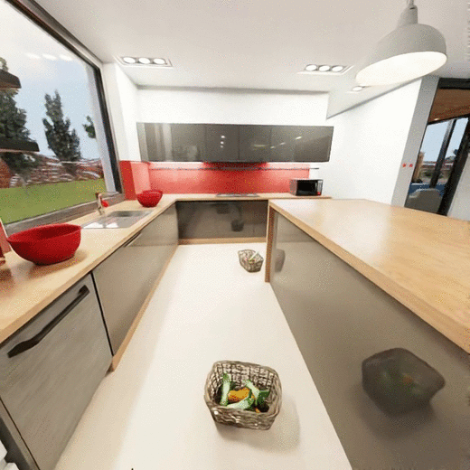
TSV / Task condition
Question: Sort vegetables into three mixing bowls by type. GT: {"progress": 46.15, "next_action": "pick up the leek from the wicker basket"}.
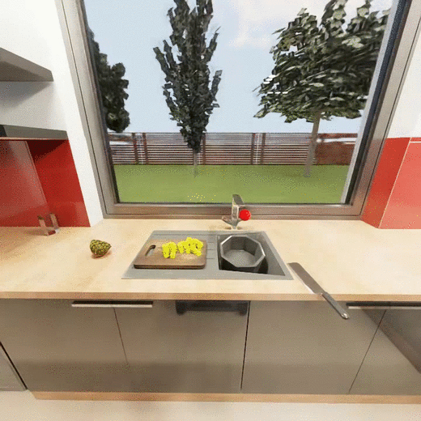
TSV / Primitive skill
Question: Pour diced pineapple into the bowl, then return the cutting board to the sink. GT: {"progress": 50, "next_action": "pour the diced pineapple from the cutting board into the bowl"}.
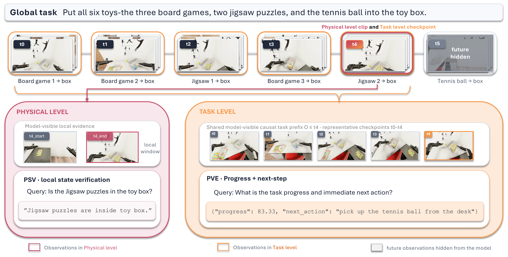
Why this benchmark
Capek-StateBench targets the verification side of embodied execution: observable physical predicates, task progress, and the immediate next action needed to continue. It is held out from specialist training and aligned with the State Verification objective.
500 examples evaluate object states and relations from a single image, short clip, or key-frame set. Predictions are normalized and scored by exact match.
500 examples evaluate progress and next-step prediction from a causal visual prefix: 213 task-condition records and 287 primitive-skill records.
Physical scores use exact match. Task scores combine progress accuracy and next-action semantic matching:
s_p: progress score; p̂: predicted progress; p: reference progress; s_a: next-action semantic exact match; s_T: task-track score.
Static QA samples
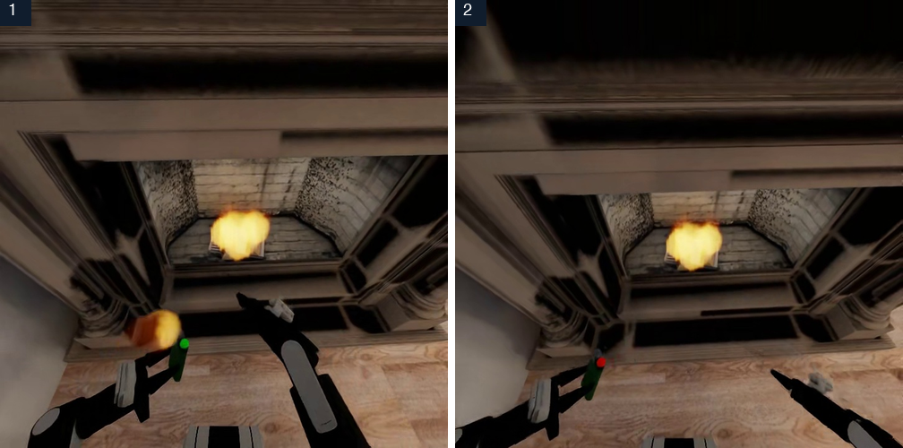
State Verification
Question
Based on observations, is the lighter on or off?
Answer
off
GT
off
The model tracks the lighter across chronological observations and returns the final state label.
Execution-centric taxonomy and method
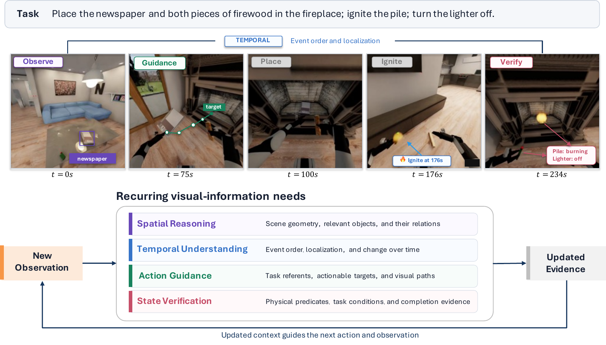
Why this taxonomy
A robot does not just answer what is in an image. It must localize objects, understand what changed, choose grounded actions, and verify whether the world reached the required state after acting.
Capek 0.5 therefore organizes post-training around four capabilities that repeatedly appear during execution, then turns each capability into structured, checkable supervision.
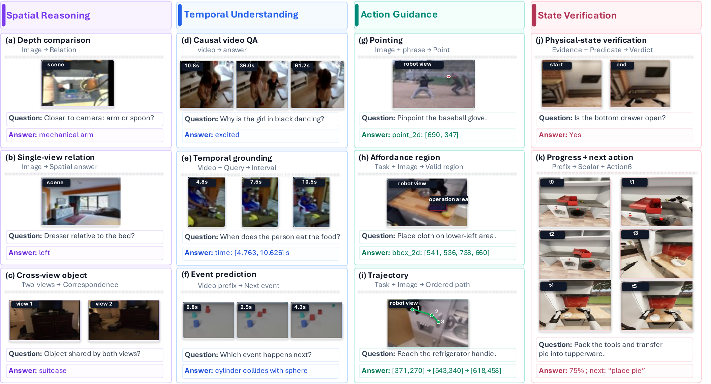
Spatial reasoning handles geometry, object relations, viewpoint changes, distance, depth, and placement feasibility.
Temporal understanding handles event ordering, temporal grounding, long videos, and observation-to-observation changes.
Action guidance grounds language into referents, points, affordance regions, and ordered image-space trajectories.
State verification checks physical predicates, progress, next actions, and task-state completion.
Make outputs verifiable
Each capability uses output formats that can be parsed and scored: choices for spatial judgments, time intervals for events, coordinates and trajectories for guidance, and JSON-style predicates or progress fields for state verification.
This lets each specialist learn from feedback that matches the thing execution actually needs: a location, a temporal relation, an action target, or a state decision.
State candidates: 20,000 PSV rows; 24,195 PVE progress-value-estimation rows. Counts describe the candidate inventory, not the run-specific training mixture or exposure.
Direction / orientation 20,730 · 24.7%
Multi- / cross-view 20,194 · 24.0%
Relations / metric 20,499 · 24.4%
Navigation / scene 14,028 · 16.7%
Other verified tasks 8,576 · 10.2%
Structured video reasoning 55,531 · 60.0%
Temporal / ST grounding 12,594 · 13.6%
Open video reasoning 24,441 · 26.4%
Grounding 38,767 · 40.4%
Affordance 24,408 · 25.4%
Trajectory 11,277 · 11.8%
Task understanding 21,496 · 22.4%
PSV · Physical-state verification 20,000 · 45.3%
PVE · Progress-value estimation 24,195 · 54.7%
Specialize during training
Spatial, Temporal, Guidance, and State specialists start from the same backbone but receive capability-specific data, parsers, and reward geometry. The separation keeps feedback precise while capabilities are being acquired.
Trains on relations, metric reasoning, multi-view reasoning, and scene-level spatial judgments.
Learns event ordering, temporal localization, video QA, and long-video reasoning.
Optimizes boxes, points, regions, affordances, and ordered image-space paths.
Checks state labels, binary predicates, progress values, next actions, and JSON validity.
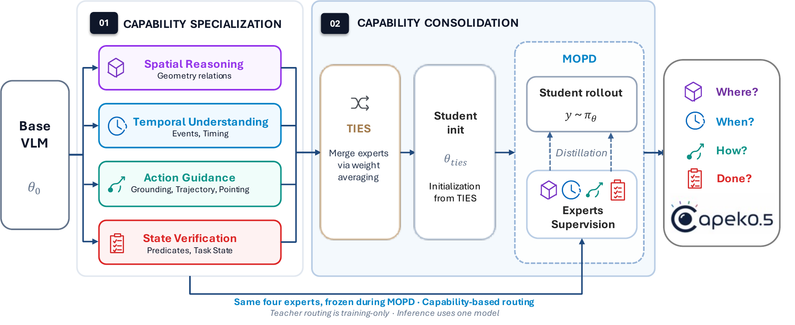
Merge for deployment
TIES initializes a unified student in weight space, then routed MOPD consolidates student-generated prefixes with the responsible frozen specialist. The deployed checkpoint exposes one autoregressive interface while retaining behaviors acquired by focused specialists.
Train four same-origin specialists independently with capability-aligned data, objectives, and rewards.
Merge specialist task vectors in weight space to initialize a unified student checkpoint.
Route student-generated prefixes to the responsible frozen specialist during training; inference uses one autoregressive model.
Core benchmark leaderboard
The default view keeps 15 high-signal rows; switch to all benchmarks for the full matrix. Metrics are shown next to benchmark names; the Capek column is pinned first, with best scores bolded and second-best scores underlined.
35B-A3B agentic evaluation
| Model | EB-HAB Avg. | EB-ALF Avg. |
|---|---|---|
| Embodied-R1.5 8B | 21.7 | 14.7 |
| RynnBrain1.1-9B | 44.7 | 35.3 |
| RoboBrain2.0-32B | 38.3 | 25.0 |
| RynnBrain-30B-A3B | 26.7 | 26.3 |
| Qwen3.6-35B-A3B | 46.0 | 50.7 |
| Capek0.5 35B-A3B | 63.0 | 55.3 |
| Model | Score | W | B |
|---|---|---|---|
| Embodied-R1.5 8B | 31.7 | 33.4 | 31.7 |
| RynnBrain1.1-9B | 29.1 | 34.3 | 23.4 |
| RoboBrain2.0-32B | 38.1 | 36.2 | 34.3 |
| RynnBrain-30B-A3B | 17.2 | 22.2 | 13.5 |
| Qwen3.6-35B-A3B | 30.2 | 37.4 | 28.8 |
| Capek0.5 35B-A3B | 36.4 | 38.6 | 32.2 |
Qualitative samples
EmbodiedBench sample
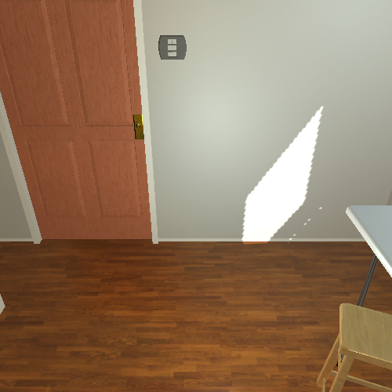
EmbodiedBench / ALF episode 10
Question
Pick up knife, slice apple, put knife in bowl, heat slice of apple in microwave, put apple slice on table.
instruction issued
The rollout starts from the task instruction before any environment-changing action.
EmbodiedBench sample
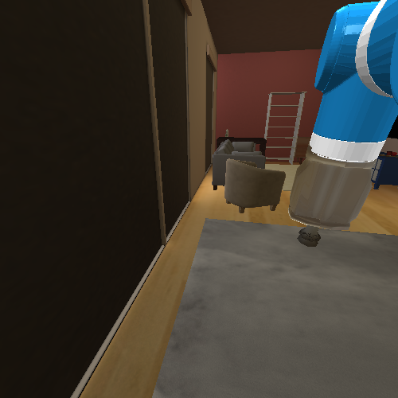
EmbodiedBench / Habitat visual episode 8
Question
Retrieve a purple fruit and place it in the sink.
instruction issued
The rollout starts with a target object and destination but no executed action.
VIGIL sample
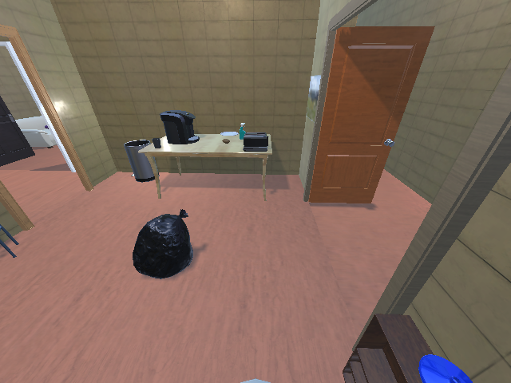
VIGIL / sample-627
Question
Find the toaster, turn it on, then report success.
navigate forward, 2
The agent moves toward the table; no target interaction has been credited yet.
VIGIL sample
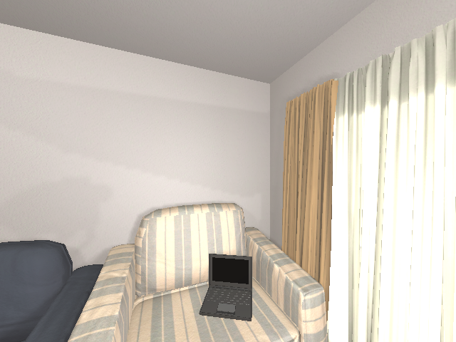
VIGIL / sample-813
Question
Pick up the laptop, place it on the coffee table, then report success.
instruction issued
The laptop is still on the armchair before any environment-changing action.
Citation
@misc{chen2026capek05executioncentricvisionlanguage,
title={Capek 0.5: An Execution-Centric Vision-Language Model for Embodied Intelligence},
author={Ying Chen and Weizhen Li and Zhe Hu and Zhenjiang Li and Rui Jiang and Zhifeng Gu and Lihuang Fang and Jiangping Liu and Lei Yi and Jie Chen},
year={2026},
eprint={2608.06756},
archivePrefix={arXiv},
primaryClass={cs.AI},
url={https://arxiv.org/abs/2608.06756},
}